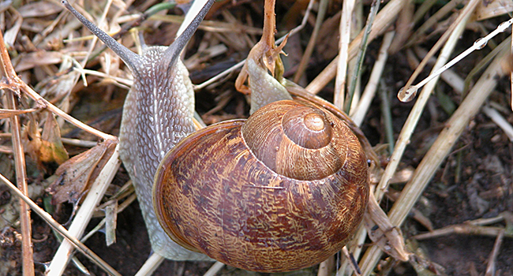

Famous Creatures
Annoyed at the length of the photo shoot, this otter diva barks at her assistant for another cuppachino.

Considered a star in the snail community, this little guy can be seen in two shots in Pixar's 'A Bug's Life' and acheived child star status with his premiering role in 'Honey I Shrunk the Kids'.
In a shameful and desperate attempt for attention, this granddaughter of the once great fox of Fox in Socks fame, claims to have been the inspiration behind the ears on Josie and her Pussycats. Aside from the obvious problem of the band's ears being feline in nature and foxes being of the canine varity, there is also the anachronistic problems, Josie predating this young fox by several decades... Just shameful!
Widely roumored to be the site of the elusive Durmstrang school for wizards, made famous (infamous?) in the works of renouned biographer J.K. Rowling's epic seven part expose on one Harry Potter, this lake in northern Russia Baikal region has long been known for it's magical properites and unexplained evnets.
 This gentle giant of the land-based arachnids is a common house pet for a legion of adolesant and pre-adolesant boys.
This gentle giant of the land-based arachnids is a common house pet for a legion of adolesant and pre-adolesant boys.
 A plesant picnic in the grass adds some extra color to another beautiful day on the preserve
A plesant picnic in the grass adds some extra color to another beautiful day on the preserve

A mysogonist bird makes cat calls at a passing female on his lunch break. The bird was later reported to H.R. and his union rep, but was merely given a slap on the wrist. When questioned about the diminutive punishment, the H.R. rep stated unapologetically, 'birds will be birds.' Of no comfort to the passing female as this was the thrid time this week she had been whistled at in a tone denoting that the male is available for mating